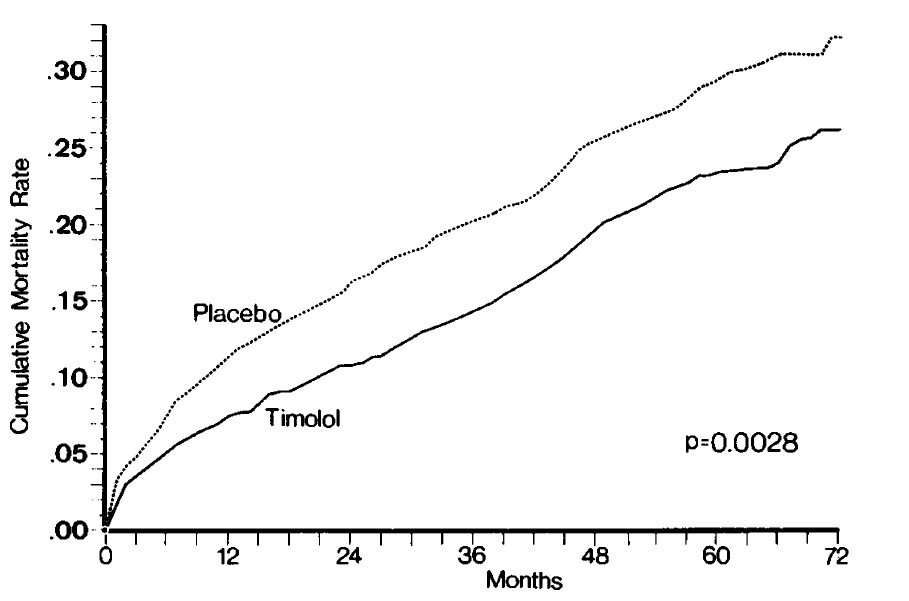
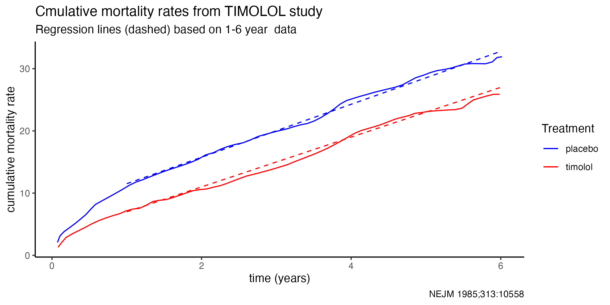

Recently, the following case was posted on Twitter
50 yo M LAD STEMI s/p PCI 12 yrs ago. 280 lbs then. Now WFPB diet- 170 lbs. LDL of 45 on Lipitor 10. Asymptomatic, 12K steps daily. Finds me with a hope to get off BB, ACEI & aldactone. EF 30% before now 50% What would you do?
The opinion was offered by several cardiologists, whom I consider thoughtful and whom I respect, that he should continue the same treatment regime. My gut feeling was much more open to the patient’s desire to withdraw some of the prescribed drugs. When reasonable people disagree it typically reflects a lack of perfect evidence and highlights the need for careful deductive reasoning. Herein are my thoughts and reasoning on this question.
As an older member of the cardiology fraternity, I have a longer memory than some of the seminal trials that have shaped our treatment orthodoxies. Understanding where we are today requires a clear understanding of the past. Therefore let’s begin more or less at the beginning and look at the evidence for beta-blockers. The first trial of beta-blockers post MI with encouraging results (although not meeting the conventional norm for statistical significance) for improved was published in 1974 with alprenolol.
In 1981 the timolol study, a multicenter double-blind placebo controlled randomized study in patients surviving acute myocardial infarction, was published. With a follow-up to 33 months (median 17 months), mortality was reduced from 13.9% in the 939 patient placebo group to 7.7% in the 945 timolol patient group (p < 0.001). Longer term follow-up was published and although the patients were no longer formally in the trial, the authors state that most patients were still on their assigned therapy.

With this 6 year follow up the cumulative incidence curves showed different early slopes with a timolol benefit being evident in the first year following randomization. After year 1, the early benefit was maintained but there was no indication of an additional benefit to longer beta-blocker exposure, with parallel slopes (see dashed lines) in the reproduced figure below.

It is worth noting the consistency of these results with those from the BHAT trial of 3837 post AMI patients randomized to propranolol or placebo. Placebo mortality at 25 months was reduced from 9.8% to 7.2% again with cumulative mortality risks being parallel after 12 months. The authors concluded “the use of propranolol in patients with no counterindications who had a recent MI is recommended for at least 3 years”.
Not only is it unknown what would have transpired to the treated group had they stopped the beta blocker after the original 33 month observation period, but there is even more uncertainty about stopping the beta-blocker in this case, 12 years after initiation. Provided there is no excessive “kinetic mortality energy” stored and waiting to be released with beta blocker cessation, the question is which placebo incidence curve will the post beta blocker curve will follow. Will it be the increased placebo risk of year 0-1, in which case maintenance of the beta blocker likely remains beneficial. Or will it be the later placebo risk, which is identical to the beta blocker risks for the same time period, implying no advantage to its continuation.
Obviously, we do not know these counterfactual results, but a reasonable bet is the later time periods are more representative of the risk estimates and that slow withdrawal of the beta blocker is entirely justified. Certainly, this seems as justified as the extrapolation of benefits extending literally a decade beyond the original observed data This viewpoint is further strengthened after accounting for medical advances occurring since the original beta blocker studies were performed. In the ensuing years, we have learned that following AMI, overall survival is improved by primary PCI, aspirin, lipid lowering drugs and ACE inhibitors, all interventions our case patient is receiving (I’m assuming he is on aspirin even if not stated). Now if we have saved his life with aspirin, saved it again with primary PCI, saved it one more time with lipid lowering drugs and finally saved it another time with ACE inhibition, what is the possibility that the beta blocker is still necessary to continue saving his life. How many times can we save this same life?
On the other hand given in the absence of angina, there are no positive quality of life advantages to be expected from beta blockers. In contrast, there are multiple well known negative QoL metrics associated with beta blockers including fatigue, decreased exercise tolerance, sleep disturbances and impotency. Moreover, these side effects increase with age. Other issues that may enter into play are the patient’s desires and values, the additional drug costs, and a sentiment of being over medicalized which may negatively influence compliance with other more beneficial treatments, including those outside the realm of cardiovascular medicine (see increasing vaccine hesitancy).
Now I have only looked at the question of beta blocker withdrawal as chronologically that was probably the first medication given to the patient and likely the one with the greatest negative impact on QoL. I do recognize the heresy of a cardiologist suggesting beta blocker withdrawal. Of course, beta blockers do have a role in chronic left ventricular dysfunction but here the studies addressed a population with depressed ejection fractions and so don’t provide any compelling reason for their continuation in this patient.
The same detailed examination of the continued use of other medications seems appropriate and may be the source of a future blog.